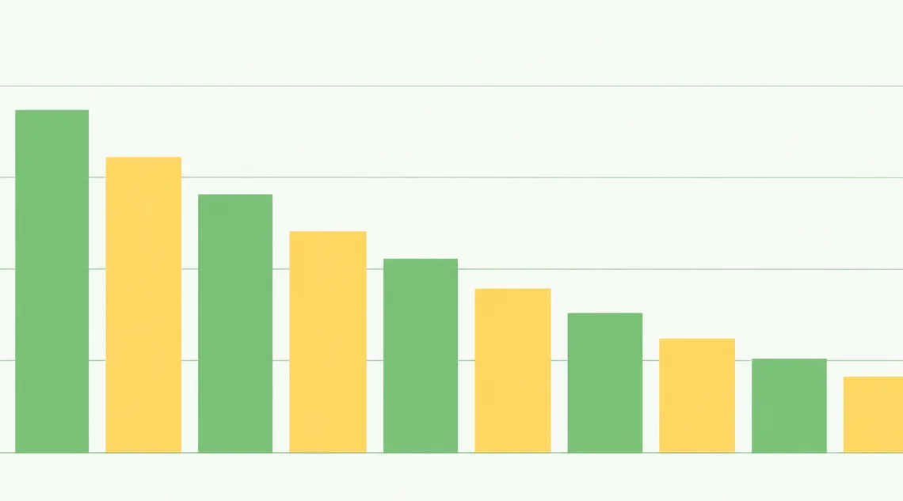
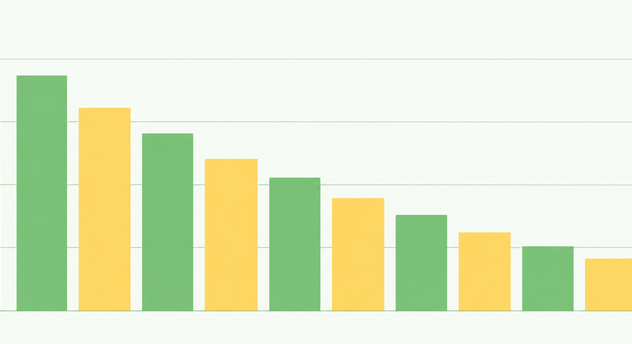
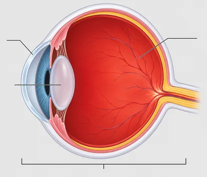
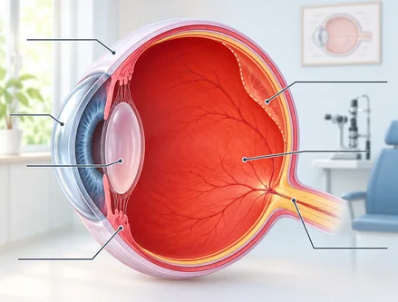
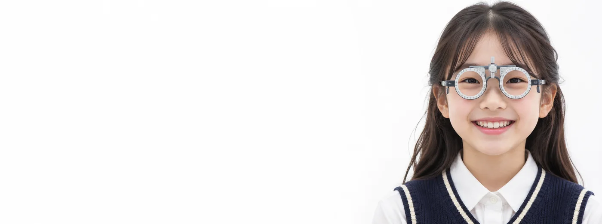
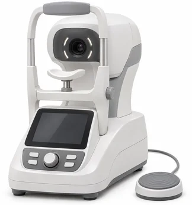
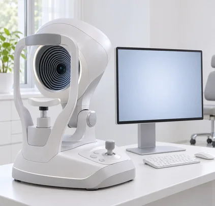
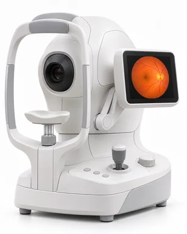

childhood myopia
소아 · 청소년 근시
안구 길이와 굴절률이 맞지 않아
근시는 먼 곳에 초점을 맞추기 어려운 굴절 이상입니다.
어린 시기의 시력 변화는 성장에 따라 달라집니다.
안구 길이는 굴절 상태에 영향을 줍니다.
큰 굴절차이를 만들 수 있습니다.
미리 관리하면 우리 아이의
평생 시력이 달라질 수 있습니다.
성장기 어린이와 청소년 10명 중 6명
가량이 근시로 불편을 겪고 있습니다.
이 시기의 근시는
고도근시나 초고도근시로 나빠질 수 있습니다.
우리 아이 시력이 완성되기 전에
체계적인 눈 관리로 좋아진 시력을 선물하세요.
안구 길이와 굴절률이 맞지 않아
근시는 먼 곳에 초점을 맞추기 어려운 굴절 이상입니다.
어린 시기의 시력 변화는 성장에 따라 달라집니다.
안구 길이는 굴절 상태에 영향을 줍니다.
큰 굴절차이를 만들 수 있습니다.
가까운 곳은 잘 보이고
먼 거리의 물체가 흐리게 보이는 상태를 근시라 합니다.
성장기에 근시가 계속 진행되면
고도근시로 이어질 수 있습니다.
10대 청소년 근시 유병률 80% 이상,
고도근시 약 12%


근시가 진행되면 안구가 점차 길어지며
눈의 구조도 함께 변합니다.
근시 도수가 많이 높은 눈은 망막과 시신경의 변화, 안압 관련 질환이나 눈 정렬 문제 등이
정상 눈보다 더 흔하게 생길 수 있습니다.
normal abnormal

정상적인 안축장
길어진 안축장60배
7.8배
2.3배

눈이 자라는 성장기 아이들은 가까운 곳을 보는
활동 때문에 잠깐 가성근시가 나타날 수 있습니다.
특히 어린이에게 많이 나타나는 가성근시는
일반 근시와 달리 수정체를 조절하는 근육이 수축해
일시적으로 먼 곳이 잘 안보이는 가짜 근시스마트기기 사용은 눈 피로를 키울 수 있습니다.
독서, PC게임 등
근거리 작업을 오래 하면 찾아오는
잠깐 생기는 근시 현상으로 먼 곳 시력이 떨어지면서
눈 피로, 두통 등이 함께 나타납니다.
가짜 근시이므로 생활 습관을 바꾸고
쉬면 자연스럽게 나아질 수 있습니다.
반면, 진성근시는 실제로 눈이 나빠진 것을 의미합니다.
가성근시도 경우에 따라 진짜 근시로
진행할 수 있습니다.
조절이 일시적으로 과도해 생기는 가성근시는 실제 굴절 상태와 다릅니다. 이때 필요하지 않은 도수의 안경을
착용할 경우
시력이 그 상태로 정착되며
영구적인 근시로 이어지는 것입니다.
아이의 근시가 조절에 의한 일시적 변화인지 실제 굴절이상인지 검사로 먼저 구별해야 합니다.
근시가 진행된다는 것은 망막이나 시신경 등에
눈 구조에
문제가 생길 가능성이 높아진다는
뜻입니다.
그래서 정확한 진단과 체계적인 관리를 위한
정밀 검사를 받는 것이 필요합니다.
근시를 진단하는 기본적인 방법은
굴절검사를 하는 것입니다.
조절마비안약을 점안하고 시행하는
조절마비굴절검사를 하기도 합니다.
처음 안경을 맞추는 아이는 조절마비 굴절검사가 필요합니다.
꼭 필요하며,
근시 진행 정도에 따라
주기적으로 시행하기도 합니다.
 ARK
ARK
근시가 진행하는 속도를 확인하는 방법으로
안축장 검사가 있습니다.
안축장 검사는 눈의 앞뒤 길이를 0.02mm 단위로
정밀도로 측정하며,
눈이 길어지면서 진행하는
근시의 진행 정도를 알아보는데
꼭 필요한 검사입니다.

A/B S-can 각막 모양을 정밀하게 측정할 수 있습니다.
난시를 정밀하게 확인할 수 있으며,
각막굴절교정렌즈 착용 전후의
각막변화를 측정하여 렌즈가 각막을
적절히 변형시켜
근시 억제효과가
잘 나타나는지 확인할 수 있습니다.

G6
시신경과 망막의 이상 여부를
진단하는 검사입니다.

FUNDUS